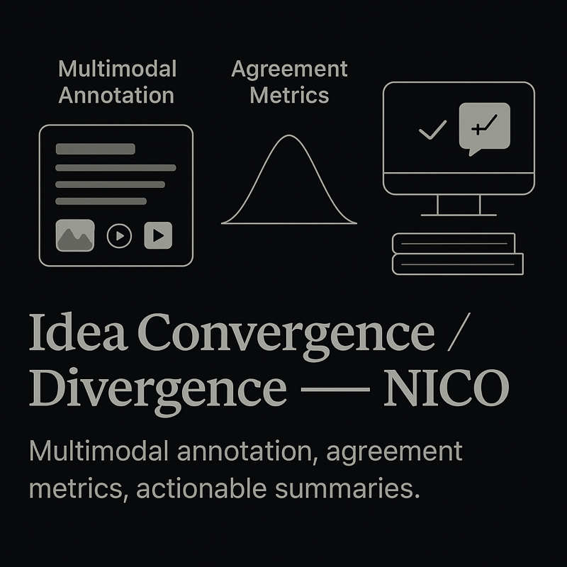

Can Multimodal AI Decode and Support How Real-World Teams Collaborate?
This ongoing project is conducted with Dr. Evey Huang at the Northwestern Institute on Complex Systems (NICO), in collaboration with Dr. Matt Groh and Prof. Brian Uzzi. We use multimodal AI to decode how teams actually collaborate, moving organizations from gut feelings and annual surveys to real-time, evidence-based insights about what makes teams succeed or fail.
#MULTIMODAL AI · #TEAM SCIENCE · #EVALUATION FRAMEWORK · 25 February 2025
Project overview
Organizations often talk about psychological safety and open collaboration, but most cannot measure whether those values show up in everyday meetings. Research consistently shows team failures often trace back to interpersonal dynamics rather than technical skill gaps. The micro-moments that build or erode collaboration, such as ignored ideas, imbalanced speaking time, or dismissive responses, are hard to observe at scale with traditional methods.
Conventional behavioral coding can require around ten hours of expert human annotation per hour of team interaction, which makes large-scale analysis costly and slow. We treat this as both a scientific bottleneck and a systems-design opportunity.
Approach and data
Our multimodal pipeline jointly analyzes video, audio, and language from real team interactions at approximately $1 per hour of footage, compared with hundreds of dollars in expert labor. The system extracts behavioral signals including participation dynamics, turn-taking, idea-building versus blocking behavior, and emotional trajectories across a conversation.
The dataset currently spans 300+ hours of scientific research teams, 2,000+ hours of B2B sales calls, and 300+ hours of entrepreneurial pitch negotiations. This breadth helps distinguish what generalizes across contexts from what is context-specific.
Theory, evaluation, and responsibility
The pipeline is grounded in organizational theory. We synthesized team-science research into a behavior coding framework and prompt structure around validated constructs such as transactive memory, shared mental models, and Tuckman team-development stages.
AI annotations are benchmarked against expert human coders with systematic audits, and privacy protections are built in from the start through strict access controls and team-level reporting.
Early signals and impact
Early results show that behaviors like clarifying-question frequency and recovery speed after disagreement can predict team outcomes weeks later. The long-term goal is an early-warning system that can detect collaboration fragmentation before visible project failure.
Related outputs include an in-review Point of View article for the Journal of Organizational Design (2026), and recognition as a finalist (top 10% of 250+ proposals) in the AI for Organizations Grand Challenge organized by Google DeepMind and Stanford HAI in 2025.
Collaborators: Dr. Evey Huang, Dr. Matt Groh, Prof. Brian Uzzi, and Max Chalekson.